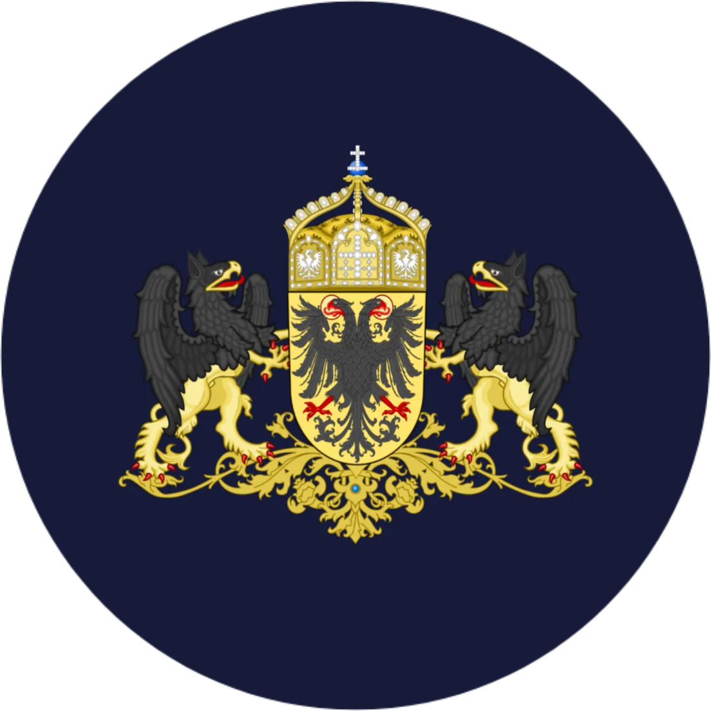
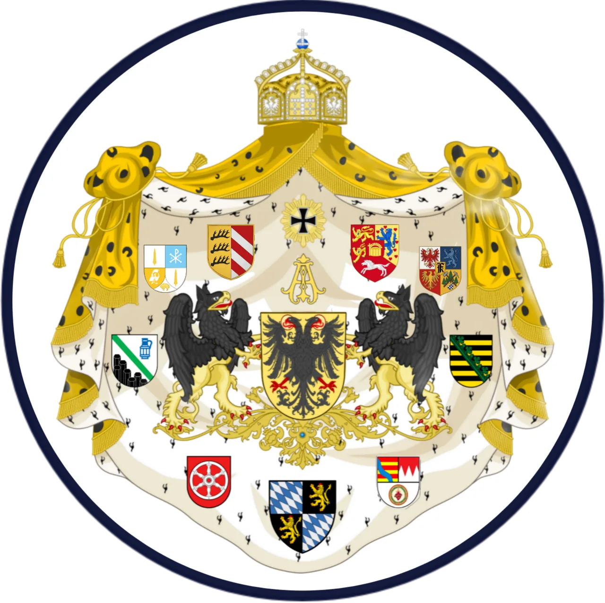

For lovers of monarchy, nobility, the military and history
The interactive role-play
The Imperium Germanicum is a fictional confederation of states in Europe, based on the borders of the former Holy Roman Empire. It depicts an alternative present in which the Holy Roman Empire survived the centuries and has continued to develop into modern times.

- Territory
- 1,205,000 km²
- Citizens
- 217.000.000
- Prince-Electors in the Senate
- 9
- Emperor's term of office
- 1 year
The Empire
The result of this development is the Imperium Germanicum.
Like its historical predecessor, the Imperium Germanicum consists of countless smaller states, including various principalities, kingdoms, duchies and other territorial bodies.
Very high up in the hierarchy are the 9 Prince-Electors, who are the 9 heads of state of the Empire's most important constituent states; together they form the so-called Imperial Senate.
One of the Senate's most important tasks is to elect the Sovereign and head of state of the Imperium Germanicum, the Emperor.
The Emperor is elected for 1 year from among the 9 Prince-Electors, and re-election is possible without limit.
Has this information piqued your interest?
Feel free to look around our website and become part of the Imperium Germanicum.
 – open the organisation chart
– open the organisation chart – Enlarge map
– Enlarge map
Central and Southern Europe
Territory of the Imperium Germanicum
The Imperium Germanicum is located in Central and Southern Europe and covers a territory of 1,205,000 km².
Owing to the personal union of the imperial throne with the royal throne, the Kingdom of Apulia is de facto a part of the Empire, as is the Holy See, within whose territory His Holiness the Pope holds a special position, while His Majesty the Emperor controls the military and civil administration.
The Imperium Germanicum is also organised as a partially centralised federal state.
The Empire consists of many constituent states of varying size, which mostly determine their internal affairs themselves.
Here the rule prescribed by the Charter applies that imperial law overrides state law wherever laws conflict.
The Imperium Germanicum as a whole therefore has 217,000,000 citizens.
9 of the Empire's constituent states are so-called Electorates, whose respective head of state holds a seat as Prince-Elector in the Senate, the executive body of the Empire.
All other heads of state hold a seat, together with their respective delegation, in the Imperial Diet, the legislative body of the Empire.
To the Imperial map
Institutions & Constitution
A brief overview
A small taste of some of our numerous institutions and the constitution of the Empire

Head of state
The Sovereign
The Sovereign is the official head of state of the Imperium Germanicum; officeholders, officers and judges swear allegiance to him.
The Sovereign appoints and dismisses the officials, judges and consuls of the Empire and summons them at will. He can also pardon convicts and, by decree, make certain decisions temporarily without the Senate.
The Sovereign is the highest representative of the Empire and as such enjoys the highest dignity; the Sovereign always has the right to be heard.